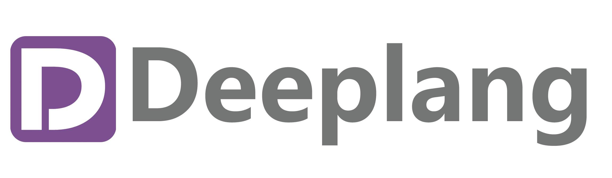

中国编程语言
主要收录国内环境产生的编程语言、会重点考虑中文社区、中文支持、中文用户中文教程等国内的影响力。对于有国际影响力的语言自会有国际权威机构做出最客观的评价，不在这个列表考虑。这只代表作者个人观点！

- 在线阅读: https://zh-lang.cn
- 代码仓库: https://github.com/china-programming-languages/zh-lang-book
- 国产语言论坛: https://zh-lang.osanswer.net/
前言
语言列表
| 语言名称 | 编程语言 | 作者 | 上次更新 | 简介 |
|---|---|---|---|---|
| 凹语言™ | Go | 柴树杉/丁尔男/史斌 |  | 专注于 WASM 平台的通用语言 |
| Aya Prover | Java | 千里冰封等 |  | 一种编程语言和证明助手，专为形式化数学和类型导向编程而设计，支持同伦类型论 |
| Calcit | Rust | 题叶 |  | 缩进语法的 Clojure 方言，基于 Rust 解释执行，支持编译为 *.mjs 使用 |
| 蝉语 | TypeScript | 谢宇恒 |  | 一门依赖类型编程语言，一个交互式定理证明器 |
| 草蟒 | Python | 吴胜金 | - | Python 中文版，支持全中文编程，完全兼容 python 生态 |
| Darabonba | JavaScript | 阿里云 |  | 用于 OpenAPI 的 DSL 语言，用来生成多语言的 SDK 等代码 |
| Deeplang | C++ | 浙大、中科大、帝国理工等高校学生 |  | 具有鲜明内存安全特性的面向IoT场景的语言 |
| Fanx | C | chunquedong |  | 面向对象的静态类型的全栈编程语言，可以编译为C语言、Java字节码、javascript，并提供跨平台开发框架 |
| Go+ | Go | 许式伟 |  | 基于 Go 语言扩展的语言 |
| HVML | C | 魏永明 |  | 一种具有新结构、新原理和新设计模式的可编程标记语言 |
| Jedi | JavaScript, OMeta, PHP | 贺师俊 |  | 类似于 Pug 的模板语言，解析器基于 OMetaJS，编译为 PHP，曾在百姓网内部大规模使用，2018年后停止维护 |
| Karl | C++ | 创造君 |  | 静态强类型编程语言，正处于起步阶段 |
| KCL | Rust | 徐鹏飞 |  | 基于约束的记录及函数语言，目前已经用于规模化云原生运维等领域 |
| 洛书 | C++ | 陈朝臣 | - | 基于专用虚拟指令集、面向多种运用场景的中文编程语言 |
| 木兰 | Python | 原创：刘雷等；重现：吴烜等 | - | 基于 Python 的编程语言，语法设计包括 用大括号取代强制缩进 等等 |
| OpenBlock | JavaScript | 杜天微 | - | 简单易学的、面向业务的图形化脚本语言，开放原子开源基金会孵化项目 |
| 气语 | C | ? |  | 中文编程语言 |
| reXscript | C++ | 小康00010 |  | 动态类型脚本编程语言，具有相对丰富的库和一个高效的解释器 |
| 入墨答 | Haskell | SOL |  | 简单通顺的中文入（λ）演算，可与haskell混编，正在兼容F# |
| Unilang | C++ | Deepin |  | Deepin 自研的编程语言 |
| 文言 | TypeScript | 黄令东 |  | 以文言文书写的编程语言 |
| woolang | C++ | mrcino |  | 一门静态强类型编程语言，具有丰富的库和完善的编译运行时环境，性能较高，语法特性较齐全 |
| 粤语 | Python | 萧伟俊 |  | 以粤语书写的编程语言 |
| 豫言 | SML | UltimatePea |  | 函数式中文编程语言 |
| 智锐 | C++ | 李登淳 |  | 一门跨平台的动态类型应用层通用编程语言，在四川大学有较为活跃的学生社区 |
| ZLOGO | C# | TKT2016 |  | 功能与 LOGO 类似的中文编程语言，后有 在线版本 |
| 凸语言 | tu | poulsen |  | 自研零依赖,支持动态、静态类型的编译性语言,自举中... |
| 好查 | Kotlin | dafei1288 | - | 中文数据查询DSL，可以进行数据查询与绘图 |
注: 使用英文名字的语言后面不再加语言后缀, 比如 Go+
生产级语言
易语言
仓颉
KCL
OpenBlock（待更名）
OpenBlock是一种专为没有技术背景的非研发人员设计的图形化脚本语言。
以完全图形化的方式展现逻辑，并提供大量的图形方式展示逻辑内容，简单易学。
OpenBlock是面向业务的编程语言，提供了完整IDE支持。
OpenBlock编辑器原生使用HTML5技术构建，可部署于任何服务器并在任何主流浏览器中运行。
OpenBlock精简的指令集，支持多宿主语言、可跨平台部署；支持高并发、多线程;
内部实现了类型系统、语法树、编译、字节码、运行时等现代语言的全部技术核心。
面向状态机的编程范式，降低代码低耦合，拥有快速构建可扩、展易维护的业务模型的能力。
在线展示：https://mlzone.areyeshot.com/
开发中语言
Aya
 Calcit
Calcit
欢迎尝试 Calcit 语言. 中文可以叫"方解石"或者"方解"语言.
特性和功能
主要用于网页应用开发和一些简单的脚本的场景. 基于 ClojureScript 功能子集开发, 加上了一些自研的工具链和定制策略提升编码速度.
- 不可变数据结构, 便于 Virtual DOM 方案优化
- Lisp 方言, 支持基本的宏定义扩展语言
- 热替换友好, 聚焦快速反馈和迭代
- 支持编译到
.mjs文件使用 - 使用树形编辑器编码, 同时也支持缩进前缀语法的文本开发方式
- 使用 Rust 开发, 可以通过 FFI 方式调用 Rust 生态的模块
ClojureScript 由于使用 JVM 作为运行环境, 启动速度慢运行内存大, 而且针对 Closure Compiler 生成 js 代码一定程度影响了与前端工具链的衔接使用. Calcit 基于 Rust 平台和较简化的代码生成避开了此类问题.
蝉语 Cicada
草蟒
Deeplang
Deeplang语言是一种自制编程语言，由来自浙大、中科大、帝国理工等高校的学生共同完成。
Deeplang致力于成为一门具有鲜明内存安全特性的面向IoT场景的语言，设计过程中参考Rust的安全机制，但又根据IoT场景的特性选择了更合适的解释执行模式。Deeplang是一种静态类型、强类型语言，参考C-style设计语法，同时支持过程式、逻辑式和函数式的混合范式。
Deeplang目前正处于持续的开发和迭代中。
Deeplang的核心特性之一是它的内存管理系统。 Deeplang的内存管理系统由三部分组成：
- 一些类型可以任意复制，这些类型被称为“值类型”，使用不受限制
- 不能随意复制的类型，可以采用类似Rust语言的所有权+借用的机制进行管理
- Deeplang还提供内建的引用计数支持，并计划使用Koka语言中的Perceus技术优化引用计数的性能
代码仓库：http://github.com/deeplang-org/deeplang
Fanx
Go+
HVML
Jedi
ZLOGO
木兰
气语
入墨答
Unilang
凹语言
文言
粤语
粤语编程语言(Cantonese)是一门用粤语来与计算机沟通的编程语言, 由一位来自广州的16岁高中生 Stepfen Shawn 开发.
特性
- 图灵完备, 语法灵活丰富
- 具有有丰富的内置函数
- 可扩展性, 易于与 Python 相互调用
- 利用粤语与编程结合的方式, 添加了编程的趣味性
使用粤语编程语言可以写出优美而又功能强大的代码, 以下为用粤语编程语言编写的翻译器:
使下 网络请求
讲嘢 : 结束 係 唔啱
落操场玩跑步
讲嘢 : |文本| 係 畀你啲嘢("请输入一段要翻译的文字：")
如果 |文本 系 "E"| 嘅话 => {
讲嘢 : |结束| 係 啱
}
|'doctype' ==> 'json', 'type' ==> 'AUTO', 'i' ==> 文本| 埋堆 -> |数据|
讲嘢 : |网址| 係 "http://fanyi.youdao.com/translate"
收风 -> |网址, data = 数据, json = True| @ |数据|
畀我睇下 |身位(数据, 'translateResult', 0, 0, "tgt")| 点样先?
玩到 |结束| 为止
目前粤语编程语言依然处于开发和迭代中, 致力成为一门既有艺术性又不失实用性的编程语言!
官方网站: https://cantonese-community.github.io/
代码仓库: https://github.com/StepfenShawn/Cantonese
参考自：
文言文编程还不够好玩？这里有个16岁高中生开发的粤语编程项目
用粤语编程写一个翻译器吧!
ZLOGO
ZLOGO
实例
从技术上讲，这也是一门DSL，只是用中文来做了关键字。下面我们来看一个实例：
查询 {
本次 使用 数据库{
// username="1"
// password="1"
// url="jdbc:mysql://localhost:3306/1"
// driver="com.mysql.jdbc.Driver"
}
本次 表 组("gtp_user","gtp_user_role")
本次 字段 组("gtp_user.name","gtp_user_role.role_id")
本次 条件 "gtp_user.name = 'admin'"
本次 聚合 组("gtp_user.name","gtp_user_role.role_id")
本次 排序 组("gtp_user_role.role_id")
本次 截取 (1 到 11)
} 画 线图
下面我们来逐步解析这个案例，首先构建一个查询，这其实是在构建一个查询对象，在这个查询对象的作用域内，本次代表当前的查询。
说明
首先需要指定使用的数据库，本次 使用 数据库 {} 里面可以使用你自己的数据源，去掉注释，修改成你自己的数据源即可。目前只设置了基础属性。
现在支持的查询谓词： 表、字段、条件、聚合、排序、截取
支持的动作谓词： 画（线图、饼图、表）、转 （CSV、HTML、JSON）
其他： 组、到
表：用来设置查询的表，输入 表名，必填属性，需要使用双引号括起来。可与组联用。
字段：用来设置查询字段，输入 表名.字段名 ，必填属性，需要使用双引号括起来。可与组联用。
条件：用来设置查询条件表达式，暂时只能将所有条件一起输入， 可选属性，需要使用双引号括起来。
聚合：用来设置查询的聚合字段，输入 表名.字段名， 可选属性，需要使用双引号括起来。可与组联用。
排序：用来设置查询的排序字段，输入 表名.字段名， 可选属性，需要使用双引号括起来。可与组联用。
截取 ：用来设置查询的结果集数量，输入 数字，例如：到 10，就是取前10条，或是输入 （数字 到 数字） ， 例如： （5 到 10），获取从第五条开始的10条数据。
画：用来将结果输出，目前支持，线图、饼图和表,不需要使用双引号括起来
转：用来讲结果格式化输出，目前支持格式CSV、HTML、JSON,需要使用双引号括起来
发布: 用来将数据发布，后面设置发布路径名称，可以与 动作 转 联合使用